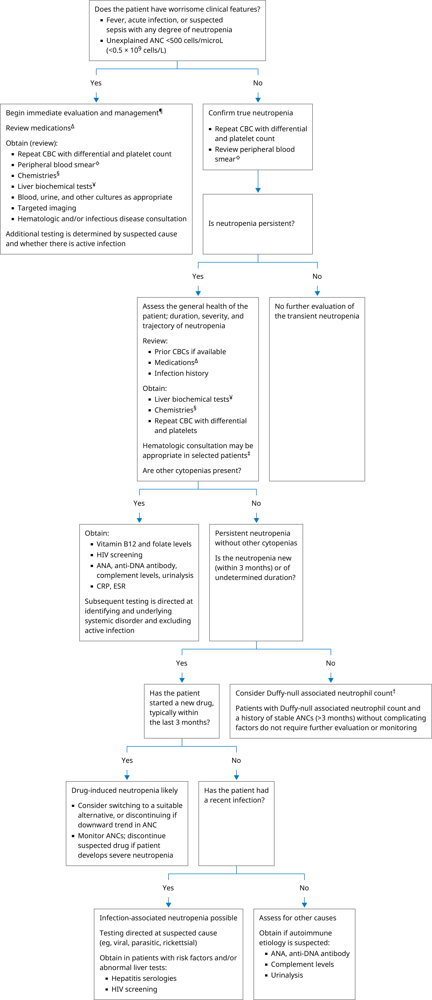

ANA: antinuclear antibody; ANC: absolute neutrophil count; aPTT: activated partial thromboplastin time; CBC: complete blood cell count; CRP: C-reactive protein; ESR: erythrocyte sedimentation rate; PT: prothrombin time; WBC: white blood cell.
* ANC is used to quantitate neutrophils. Neutropenia is usually defined as ANC <1500 cells/microL (<1.5 × 109 cells/L).
¶ Life-saving interventions should not be delayed while awaiting results of diagnostic testing.
Δ Refer to UpToDate table on drugs associated with agranulocytosis.
◊ Review of the peripheral blood smear by an experienced individual may identify abnormalities not detected by automated machines.
§ Chemistries include glucose, blood urea nitrogen (BUN), creatinine, and electrolytes.
¥ These include alanine aminotransferase (ALT), aspartate aminotransferase (AST), bilirubin, and alkaline phosphatase.
‡ Obtain hematologic consultation to evaluate patients with any of the following:† Duffy-null associated neutrophil count (DANC, formerly called benign ethnic neutropenia), typically with ANC 800 to 1200 cells/microL (0.8 to 1.2 × 109 cells/L). This is a normal neutrophil count for patients who are Duffy-negative. DANC is inherited in individuals of certain ethnic groups and is not associated with increased infections.